Contents
Introduction
1 - Box traps
sliding wire release
string loop release
pivoting wire release
2 - Mouse trap variants
falling cage trap
enlarged snap trap
spinning bird trap
3 - Snares
basic snare
lifting snares
baited whip snares
bird foot snare
4 - restricted exit traps
baited tin trap
pig trap
5 - stakes, drags and earth anchors
stakes
drags
earth anchor
6 - miscellaneous tricks
predator calls
Introduction
This page aims to deal with easily made animal traps that are simple to make out of readily available materials. All photos and pictures are original to this page and all traps and methods work well. Most likely some of these traps will be illegal in your area and proper research should be done regarding the laws before you attempt to fabricate your own trap.
~~ Lowry
1 - Box Traps
Box traps are a relatively easy design that are easy to set up and if triggered are nearly 100% reliable. These traps can be made to any size for any animal that will take bait. The disadvantage is that some wild animals are very hesitant to walk into a cage, also box traps need to be heavily constructed therefor can be quite expensive.


Parts Needed for the basic box and locking rod NOTE - these parts will make a fox sized trap, upsize or downsize for other game.
4 - pieces 1"x2" welded steel mesh cut to
120 x 55cm
2 - pieces 1"x2" welded steel mesh cut to
55 x 55cm
10 - lengths 3 x 25mm angle steel cut to
2 - lengths 3 x 25mm angle steel cut to
52.5cm
4 - lengths 3 x 25mm angle steel cut to
2 - 25" pieces of 8mm steel rod
1 - 20" piece of 8mm steel rod
2 - hinges tie wire
To construct the basic cage, first you must decide how strong the cage will have to be. If you intent to catch anything larger than a cat i would suggest using a full frame of angle steel. The above diagram uses square tube steel to only reinforce the opening and the swinging door.
Start by tieing the box together, this is easily done by using nylon cable ties join the 4 large pieces of steel mesh together then tie on one end, again with cable ties, it should be rigid enough to hold its shape enough to fabricate the rest of the trap.
Now take 2 pieces of 14" square tube steel and 2 13" pieces. weld (or bracket) these tubes together to form a perfect square. do the same with the other pieces of square tube, so you have two identical squares. One is welded to the inside of the opening to the cage and the other is used to reinforce the edge of the door by welding the mesh to one side of the square.
The door can now be hinged to the opening with small hinges available at any hardware store.
All thats left to do is make a locking rod that will slide down and lock the box when the trap is triggered. Look at the diagram above, The two "guide rods" hold the "locking rod" in position, when the trap is triggered the locking rod slides down the guide rods and locks to door shut behind the animal.
Finish the basic box by tieing the wire mesh (or welding it) together with tie wire making sure there are no gaps and it is strongly constructed as wild animals go crazy when trapped..
Triggers
Theres a large variety of triggers for these traps, they all do pretty much the same thing and are mostly variations on the same few types.
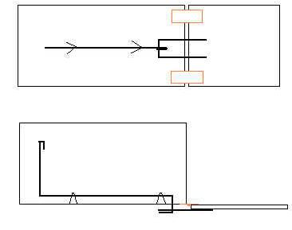

Sliding wire release - This design is used on many of the commercially available box traps, theres good reason for this as it is one of the best, this design works best for the smaller traps as the heavy gauge wire needed for the larger ones is hard to bend without the right machines. Also the heavy doors of the large traps decrease sensitivity with this design.
Look at the diagram to the right. The black lines are heavy gauge steel rod suspended to the top of the cage with wire loops, a square of the same wire is welded to the top of the door as shown to catch around the bait rod.
The trap is triggered when the animal takes the bait, which slides the wire back releasing the door.
string loop release - This trigger is simple to make and very sens
It is also very easy to make work with any sized trap. A major pro is actually setting it, in its basic form it takes two people, one to g the wire through the hole and the other to loop the string over the protruding wire.
Look at the diagram to the left, To set the trap a string is tied to th door, the string then runs over the centre back of the trap and a loo the string is placed over the bit of protruding wire, as the bait pole pulled, the hinge bends sliding the wire out of the hole letting go o wire.

pivoting wire release - This is the trigger i used on my box trap, made with 6mm rod sliding/pivoting around nuts welded to the frame. This trigger gives great sensitivity compared to the "sliding wire release" due to the added leverage. This design works great for larger heavier traps, or traps using springs on the door.
Things to consider
- Smell is the major problem for every trapper, while this isnt so important for catching your neighbours cat, it is very important if you intend to target wild game. To avoid unnatural smell dont use solvents, glue or paint. If you would like to colour the trap which can yeild better results there are metal stains available or although somewhat expensive powdercoating the trap. Keep the trap away from oil and petrol in the back of your ute and where gloves when handling the trap and bait in its later stages.
- sensitivity, how sensitive a trap is relies on many factors although the major contributer is leverage, if your trap doesnt seem sensitive enough experiment with leverage, examples of this are moving the pin down further on the
"string loop release" trap, or instead of using the strait pull wire in the "sliding wire release" experiment with using a pivoting wire that uses leverage to pull the wire across the top back instead of forward.
- baiting the trap will be much easier if you add a rear sliding door the the trap, also note the direction of the hook on the bait rod, If i had a second go i would bend it back the other way to prevent animals from sliding the bait off the rod.
2 - Mouse Trap Variants
The mouse snap trap is a prime example of leverage used to sensitise a trap that has to hold back a large amount of force, The trap gains this sensitivity by using a long locking pin with all the force being held at the back where it hinges onto the floor plate, furthur leverage is gained by using a long bait plate.
Using this basic design, it can be mobified to produce many other traps for all sorts of game.
Falling cage trap In this trap a mesh cage, hinged at one end is suspended by a string which passes over a fixed steel rod, down through the mesh and looped around the locking pin. When the trap is triggered by pressure on the bait plate, it releases the locking pin which flies up and the string loop slides off the pin letting the cage fall over the target animal.

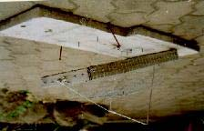
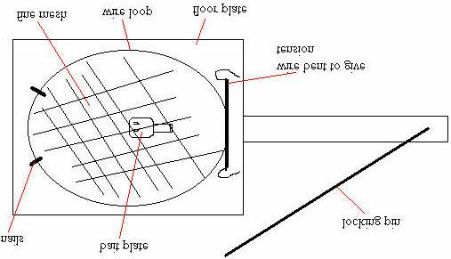
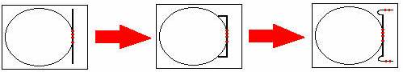
Sensitivity can be altered with this trap quite easily. This can be done by sliding the loop up and down the locking pin, the closer the loop is to the hinge the more sensitive it will be. If that technique isnt feasable the other option is to fix the string to the cage at different places this will work in the opposite fashion, the further from the hinge joining the cage to floor plate the string is tied, the more sensitive.
Enlarged snap trap Another effective trap is nothing more than an over sized mouse snap trap. But instead of killing the animal wire mesh is strung between the loop to trap and hold the animal.
The wire is 8 gauge fencing wire that is bent into a circle (circle is vital). The back half of the circle is pinned down to a large flat board with the excess ends of wire bent in such a way as to put tension on the loop as its brought back.
This is locked back by a strait piece of 8 gauge fencing wire, and the trigger is made in the shape of a standard mouse trap. Fine wire mesh is than tied around the loop to trap and hold the cat.
Below shows the method used to bend the high tensile fencing wire, first it is bent into a circle and where it touches itself is pined to the floor plate with "U" nails, the excess wire overhang is than bent forward with pliars, this now is twisted back around to face the other way and pinned down with "U" nails.
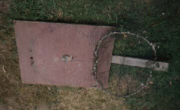
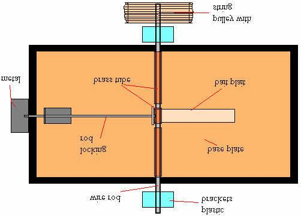
To lock the wire loop down two nails are hammered into the board. To find where these nails should be lay the wire flat onto the board than hammer the nails just inside the the inner edge of the wire on the furthest side. now bend the nails to a 30 degree angle away from the trigger.
To the left is a trap set and ready to be triggered, Now when the trap is sprung the inertia will bend the wire into an oval shape where it will go over the nails and hit the board where it regains its circular shape and locks down infront of the nail.
Spinning bird trap This is a multiple capture trap that spings and resets itself whenever the trap is triggered, its quite complicated as there are a lot of factors that influence its sensitivity. This trap differs from the others by not using the locking pin for leverage to gain sensitivity, rather the pin is fixed to the bait plate. In this case all the leverage has to be contained within the bait plate.
Look at the diagram above, the two outer pieces of brass tube is glued both to the wire rod and the base plate, the centre piece of tube moves freely over the rod but is glued to the bait plate therefor allowing the bait plait to pivot on the wire rod.
The wire rod freely turns within the plastic brackets, the pulley is glued to one end of the rod and string is wrapped around it, onto this string is tied a heavy weight.
Now i'll explain what happens, The trap is triggered by pressure on the bait plate, this pulls the wire back releasing it from behind the metal plate, because of the weight tied to the string on the pulley the whole base plate swings
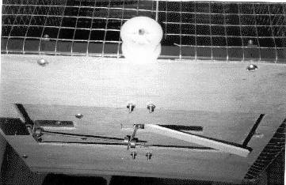
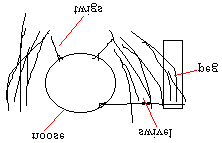

around 360 degrees dropping the bird into the cage, the weight of the locking pin combined with the inertia of the bait plate push the pin back out and it catches on the metal plate ready to be triggered again.
Sensitivity has many variables, one is the length of the bait plate, the longer the more sensitive, but there is a limit to this as the longer it is the more weight it will have therefor because it is spinning the inertia of a heavy bait plate is enough to trigger the trap, what this means is that once triggered the first time it will spin around but when the locking pin hits the metal plate the bait plate will keep moving continually springing the trap.
Other factors effecting sensitivity are the diametre of the pulley, the larger it is the more leverage it will have therefor it will put more tension on the base plate and spin it faster. Also what i done was weight the side of the locking pin about twice that of the other side, this lessens the pressure pressing on the locking pin and makes it more sensitive.
To the right is a photo of the working parts, the brass "stops" that you see along the locking pin are adjustable so that you can gain max sensitivity. These can be bought at hobby shops that deal in parts for model radio controlled planes and cars.
3 - Snares
All snares use a wire or string noose that tightens around the animal, either in its struggle or by outside tension applied to the noose. Snares are easy to make with a minimum of materials available.
basic snare - The basic snare is simply a wire noose suspended in the path of an animal such as a rabbit run or a hole in a fence, as the animal tries to push its way through the noose tightens and as it struggles it tightens more strangling or smothering the animal, a large fishing swivel is placed within the snare line so that the wire will not twist off.
lifting snares - an improvement on the basic snare as it hoists the animal up off the ground out of the reach of predators and helps prevent the wire from twisting and breaking, made by using a forked stick holding up a strait stick as in the picture, as the animal catches in the snare the stick slides off the peg and lifts the animal up.
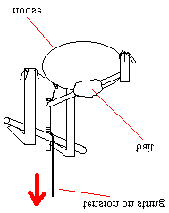
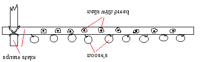

Baited whip snares - the classic whip snares use a bent down sappling to whip the animal into the air out of reach of predators and away from the ground so it cant pull itself free. This baited snare is activated when the animal attempts to take the bait, this pulls the bait rod off the toggle which releases the tension from a pulled down sapling, the cats foot is caught in the string noose & is pulled into the air. Be sure to use a good strong sappling that has ben stripped of all leaves/branches, these will create drag and slow the trap down.
Bird foot snare - This snare is made to trap the birds feet as it perches on the stake to take the bait. The nooses are made out of fine fishing line which is threaded through the stake and tied to a rod that runs beneath. nails are hammered along the sides of the horizontal stake to hold the bait.
4 - Restricted Exit Traps restricted exit traps use an opening that is easy to pass through one way but not pass back through.
baited tin trap - useful for soft skinned animals that rely on their nose and not vision, the prime target of traps like this is the water rat (now protected in all states of Australia), where the trap can be hidden under water where the animal wont see that there is no exit.
To make this trap take a tin can slightly larger than the target animal and cut a cross in the sealed end, bend the 4 flaps into the trap. unscrew the other end and tie some meat to the lid and screw back on. when the animal located the meat they attempt to get it out but the 4 sharp bits of tin dig in and wont let it out, the animal soon drowns.
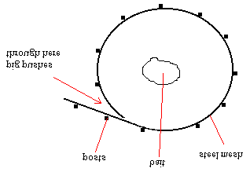

pig trap - This ultimately simple design is made out of thick steel mesh bent into a circle, star posts are hammered in around the perimetre and the mesh is tied down securely. The mesh must slightly overlap and be tensile enough to spring back once the pig passes through.
The bait is then laid in the centre of the circle.
5 - Stakes, Drags and Anchors
Stakes - Stakes are obviously used to pin the end of the trap chain down preventing the animal from running off with the trap.
6 - Miscellaneous Tricks predator calls - Predator calls work by imitating an animal in distress therefor are an effective way of luring animals into rifle range or to a waiting trap. The most common of these lures is the commercial button whistle which imitates a squeeling rabbit. these work very well during the early months of the year.
bent tin whistle - An improvised whistle is easily fashioned out of a piece of sheet metal, bent in half with a hole in one side. This ones good enough to now be available commercially.
improvised button whistle - equally as easy is a whistle made by sticky taping two beer bottle caps together, now punch a hole in each side with a nail. This whistle is easier to use than the bent tin.
grass reed squealer - I remember playing with this as a kid, But it seems those bloody Americans have given it a fancy name and decided to call up animals with it, ive never called up anything with it, but pretators are naturally curious and im quite sure it would work. Done by finding a piece of flat grass around 1cm thick, clasp your hands in the praying positon with the grass held between your two thumbs, cup your lips onto your thumbs and blow over the grass. The grass will act as a "reed" and vibrate making a squeaking squealing noise.
Document Outline
Introduction
1 - Box Traps
2 - Mouse Trap Variants
3 - Snares
4 - Restricted Exit Traps
5 - Stakes, Drags and Anchors
6 - Miscellaneous Tricks